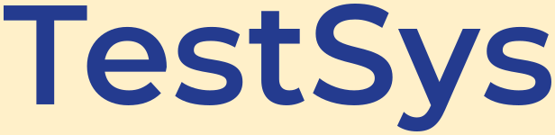
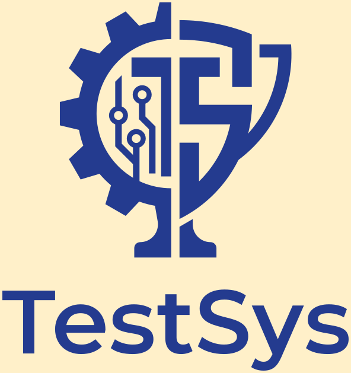
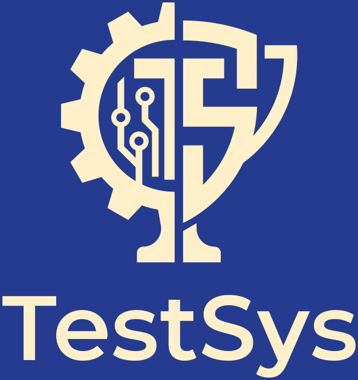

В шапке эмблема и фирменная надпись стоят рядом. Прозрачный синий вариант предназначен для светлого фона,
инверсный — для фирменного синего фона. Полный логотип используется в крупных блоках; эмблема на кремовом фоне — также как favicon.
Рисунок и пропорции сохраняются, пустые поля SVG подогнаны для интерфейса. PNG остаются в исходном квадратном формате.
Эмблема
ОбычныйПрозрачныйИнверсный
Надпись

ОбычныйПрозрачныйИнверсный
Полный логотип

Обычный
Прозрачный

Инверсный
Все SVG содержат векторные контуры и не требуют загрузки шрифта для надписи.